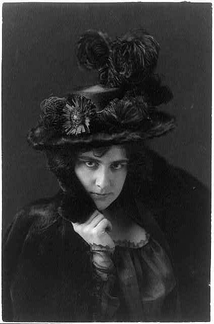
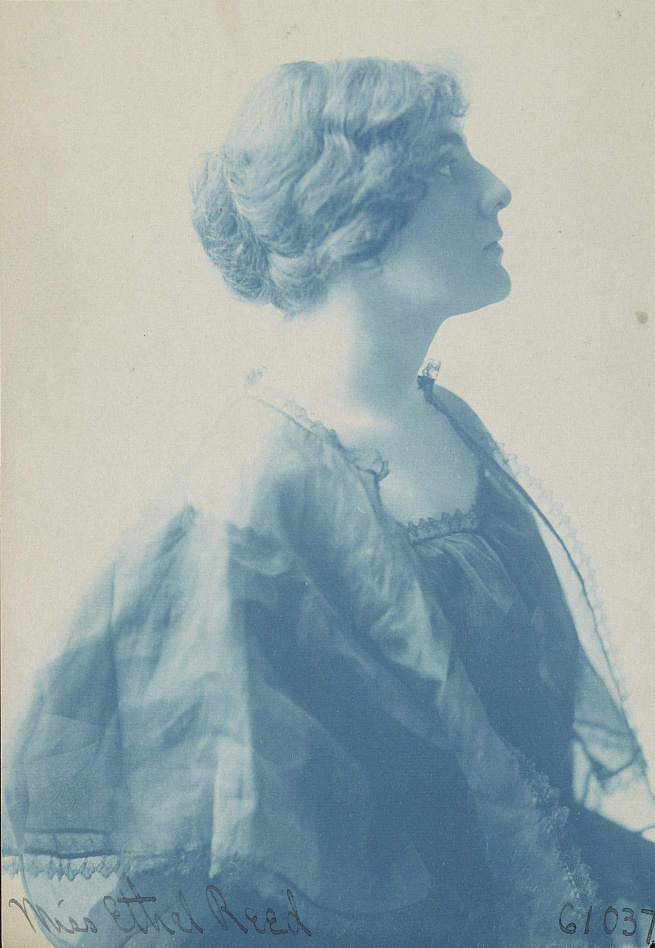
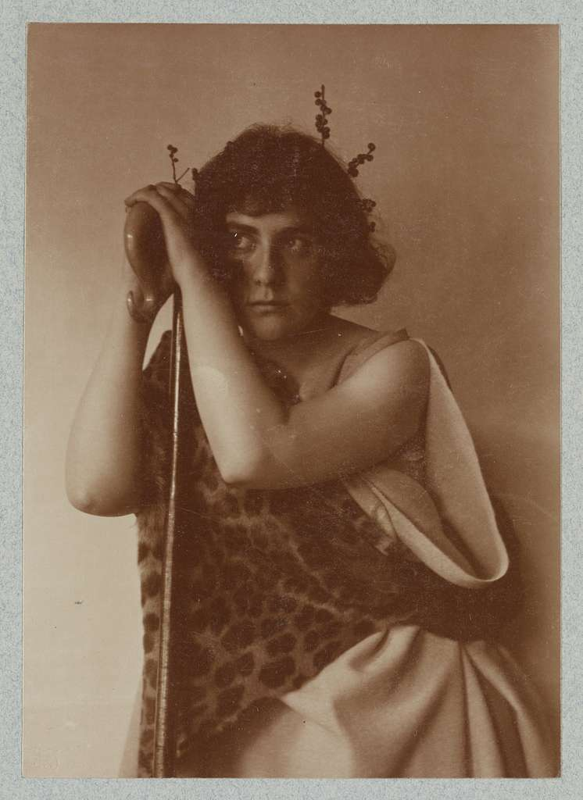
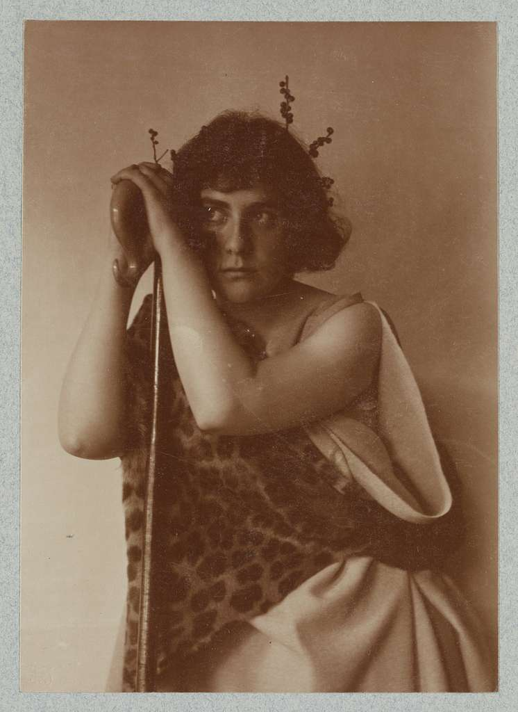

Ethel Reed
Biografía
Ethel Reed, nacida el 13 de marzo de 1874, fue una visionaria diseñadora gráfica de la Belle Époque en Estados Unidos. Su enfoque único y su creatividad la distinguieron como una de las primeras mujeres destacadas en el campo del diseño a fines del siglo XIX. Desde joven, Ethel mostró un interés innato en el arte y la estética. Se formó en las principales escuelas de diseño de la época, perfeccionando su habilidad para fusionar elementos clásicos con la modernidad emergente. Su estilo distintivo incorporaba líneas fluidas, colores vibrantes y una sensibilidad artística que la separaba de sus contemporáneos. En 1895, a la edad de 21 años, Ethel Reed publicó una serie de afiches revolucionarios que la catapultaron a la fama. Su enfoque vanguardista y su capacidad para transmitir narrativas visuales en pequeños formatos la convirtieron en un referente del diseño gráfico de la época. Además de su impacto en el diseño, Ethel también fue una defensora apasionada de los derechos de las mujeres y participó activamente en movimientos sociales de su tiempo. Su influencia trascendió las fronteras del diseño, dejando un legado duradero en la historia del arte y la cultura visual.
Fotos
  
